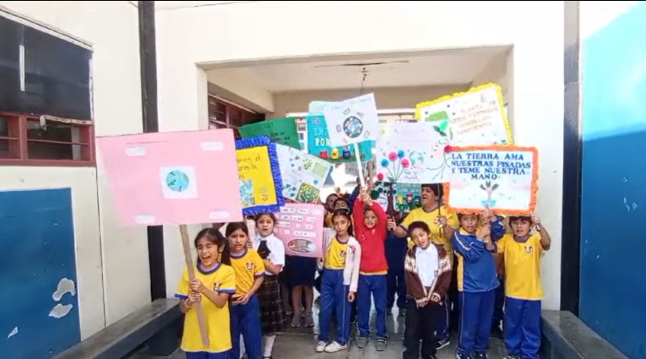

INICIAL - CUNA JARDÍN | 3 a 5 años
Aprender jugando, base para toda la vida
Desarrollo de autonomía, lenguaje y psicomotricidad a través del juego libre, con acompañamiento emocional y lonchera saludable.
🎯 Enfoque
Sectores de juego, psicomotricidad fina y gruesa, hábitos y autonomía.
📚 Áreas
- Personal Social
- Psicomotriz
- Comunicación
- Matemática lúdica
- Ciencia y ambiente
📋 Perfil
Niño que se expresa, regula emociones e inicia la lectoescritura.